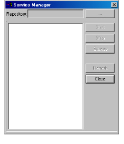
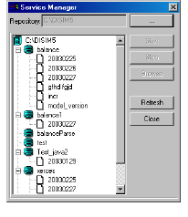
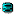
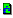
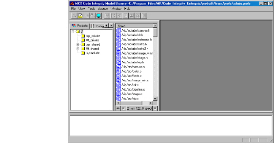

To connect to an information model
1 Select File > Connect to server.
The Service Manager dialog box appears.

2 Next to the Repository field, click the browse button (...).
A standard browse dialog box appears.
3 Browse to the directory containing your information model repository.
4 Click OK.
The Service Manager displays the models in the repository.

The Service Manager icons and their descriptions are:
|
Icon |
Description |
|
|
An information model repository. |
|
 |
An information model. |
|
|
An inactive model version. |
|
 |
A model version started from the model browser. |
|
|
A model version started from the administration client. |
5 Select the model version you want to connect to.
6 If necessary, start the selected version by clicking Start. If the selected version is already running, proceed to step 7.
The model starts, indicated by a green document icon ().
Note: The Service Manager dialog box does not automatically refresh the status of model versions that may have been changed from another model browser or the administration client. To refresh model status, click Refresh.
7 To open the model for browsing, click Browse.
The information model appears in the model browser.
